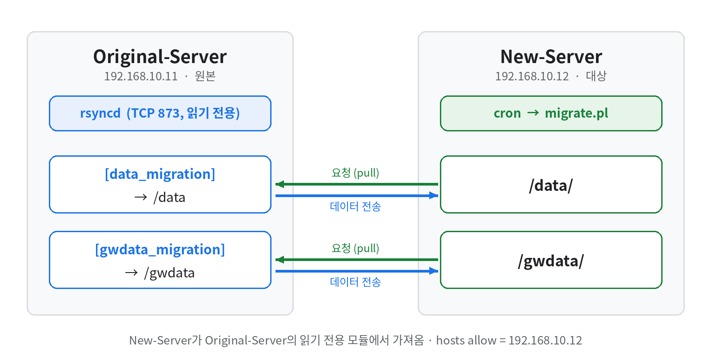

OS & 시스템 관리
rsync 데이터 이관 — Original-Server → New-Server
운영 중인 서버의 데이터 파티션(/data, /gwdata)을 새 서버로 옮긴 방법입니다. Original-Server에 읽기 전용 rsync 모듈을 열고, New-Server가 정해진 시간마다 가져오는(pull) 방식으로 미리 동기화한 뒤, 짧은 중단 시간에 최종 전환했습니다.
1. 구성

| 방식 | rsync 데몬 모듈 + New-Server에서 pull |
|---|---|
| Original-Server | 원본. /etc/rsyncd.conf에 모듈 2개, read only, New-Server IP만 허용 |
| New-Server | 대상. Perl 스크립트를 cron으로 실행, 작업별 로그와 완료 표시 파일 생성 |
| 이관 대상 | /data, /gwdata 파티션 |
pull 방식을 쓴 이유
- 원본 서버는 읽기 전용 모듈만 열면 되므로, 실수로 원본을 덮어쓸 일이 없습니다.
- 작업 스케줄, 로그, 재시도는 모두 New-Server에서 관리합니다. 운영 중인 원본 서버에는 스크립트나 cron을 추가하지 않습니다.
- 데몬 방식은 SSH 암호화를 거치지 않아, 내부망 대용량 전송에서 CPU 부담이 적고 빠릅니다.
2. Original-Server: rsync 데몬 설정
# /etc/rsyncd.conf (Original-Server)
# 공통 설정
log file = /var/log/rsyncd.log
transfer logging = yes
max connections = 4
hosts deny = *
dont compress = *.gz *.tgz *.zip *.bz2 *.xz *.7z *.jpg *.png *.mp4 *.pdf
[data_migration]
path = /data
comment = Data Partition Migration
uid = root
gid = root
use chroot = yes
read only = yes
hosts allow = 192.168.10.12
auth users = migrator
secrets file = /etc/rsyncd.secrets
[gwdata_migration]
path = /gwdata
comment = GWData Partition Migration
uid = root
gid = root
use chroot = yes
read only = yes
hosts allow = 192.168.10.12
auth users = migrator
secrets file = /etc/rsyncd.secrets| 항목 | 의미 |
|---|---|
uid / gid = root | 모든 사용자의 파일을 읽어야 하므로 root 권한으로 읽음 |
use chroot = yes | 모듈 경로 밖으로 나가지 못하게 가둠 |
read only = yes | 원본 쓰기 차단 (이관에서 가장 중요) |
hosts allow + hosts deny = * | New-Server만 접속 허용 |
auth users / secrets file | IP 제한에 계정 인증을 더함 (추가 권장 사항) |
# 인증 파일 (Original-Server) — 권한 600 이 아니면 인증 실패
echo 'migrator:ChangeMe_Str0ng' > /etc/rsyncd.secrets
chmod 600 /etc/rsyncd.secrets
# 데몬 실행 (Rocky/RHEL 9 은 rsync-daemon 패키지)
dnf install -y rsync rsync-daemon
systemctl enable --now rsyncd
# 방화벽: New-Server 에서만 873 허용
firewall-cmd --permanent --add-rich-rule='rule family=ipv4 source address=192.168.10.12 service name=rsyncd accept'
firewall-cmd --reload
# SELinux Enforcing 이면 데몬이 /data 를 읽을 수 있게 허용
setsebool -P rsync_export_all_ro on# New-Server: 접근 확인 (비밀번호 파일도 600)
echo 'ChangeMe_Str0ng' > /root/rsync/.rsync.pass
chmod 600 /root/rsync/.rsync.pass
rsync --list-only rsync://migrator@192.168.10.11/
# data_migration Data Partition Migration
# gwdata_migration GWData Partition Migration3. New-Server: 기존 스크립트 분석
기존에는 모듈마다 Perl 스크립트(Original-Server_data.pl, Original-Server_gwdata.pl)를 하나씩 두고 아래 순서로 동작했습니다.
- 설정: 원본 IP, 모듈명, 대상 경로, 작업 이름
- 현재 날짜 생성 (로그 파일 이름용)
- 6일 전 날짜 계산
rsync -arvt --stats --delete [--inplace] IP::모듈 대상실행, 결과를 로그로 저장- 종료 시각으로 완료 표시 파일(
작업명.YYYYMMDD-HH-MM.E) 생성
보완한 점
| 기존 | 문제 | 개선 |
|---|---|---|
$exit_code를 받지만 사용 안 함 | 실패해도 항상 .E 파일 생성 → 성공처럼 보임 | 종료 코드로 .OK / .FAIL 구분 |
$del_date를 계산만 함 | 로그 정리가 실제로 안 됨 → 로그 누적 | 6일 지난 로그·완료 파일 삭제 |
--delete 무조건 실행 | 원본 파티션이 마운트 안 된 상태면 빈 폴더와 동기화되어 대상 데이터 전체 삭제 | 원본 표시 파일 확인 + --max-delete 한도 |
| 대상 마운트 확인 없음 | New-Server /data가 안 붙어 있으면 루트(/)가 가득 참 | mountpoint 확인 후 실행 |
| 중복 실행 방지 없음 | 전송이 길어지면 다음 cron과 겹쳐 동시 실행 | flock 잠금 |
-arvt | -a에 -r, -t가 이미 포함. 하드링크·ACL·확장속성은 빠짐 | -aHAX --numeric-ids |
| 소유자를 이름으로 매핑 | 두 서버의 UID가 다르면 소유자가 바뀜 | --numeric-ids로 UID/GID 숫자 그대로 유지 |
| stderr를 로그에 안 남김 | 오류 메시지가 cron 메일로만 가거나 사라짐 | 2>&1로 함께 저장 |
| 모듈마다 스크립트 복사 | 수정 시 두 파일을 모두 고쳐야 함 | 스크립트 하나에 작업 목록, 인자로 선택 |
4. New-Server: 개선한 이관 스크립트
#!/usr/bin/perl
# /root/rsync/migrate.pl — Original-Server → New-Server 데이터 이관
# 사용법: migrate.pl data | gwdata [-n] (-n: 실제 전송 없이 미리 보기)
use strict;
use warnings;
use Cwd 'abs_path';
use File::Basename;
use POSIX qw(strftime);
use Fcntl qw(:flock);
# ==========================================
# [1] 설정
# ==========================================
my $src_ip = "192.168.10.11"; # Original-Server
my $src_user = "migrator";
my $script_dir = dirname(abs_path($0));
my $pass_file = "$script_dir/.rsync.pass";
my $keep_days = 6; # 로그 보관 일수
my $max_delete = 5000; # 한 번에 지울 수 있는 최대 파일 수
my %jobs = (
data => { mod => "data_migration", target => "/data", opts => "" },
gwdata => { mod => "gwdata_migration", target => "/gwdata", opts => "--inplace" },
);
my $job = shift or die "사용법: $0 data|gwdata [-n]\n";
my $j = $jobs{$job} or die "알 수 없는 작업: $job\n";
my $dry = (@ARGV && $ARGV[0] eq '-n') ? '--dry-run' : '';
my $name = "Original-Server_$job";
my $src = "rsync://$src_user\@$src_ip/$j->{mod}";
my $log_dir = "$script_dir/log";
mkdir $log_dir unless -d $log_dir;
# ==========================================
# [2] 안전 확인
# ==========================================
# 중복 실행 방지
open(my $lock, '>', "$script_dir/.$job.lock") or die "잠금 파일 생성 실패\n";
flock($lock, LOCK_EX | LOCK_NB) or die "[$name] 이미 실행 중 — 종료\n";
# 대상 파티션이 마운트되어 있는지 (안 되어 있으면 / 가 가득 참)
system("/usr/bin/mountpoint -q $j->{target}") == 0
or die "[$name] $j->{target} 마운트 안 됨 — 중단\n";
# 원본에 표시 파일이 있는지 (원본 파티션 미마운트 시 --delete 로 전체 삭제 방지)
system("/usr/bin/rsync -q --list-only --password-file=$pass_file $src/.migration_source >/dev/null 2>&1") == 0
or die "[$name] 원본 표시 파일(.migration_source) 없음 — 원본 마운트 확인 필요, 중단\n";
# ==========================================
# [3] rsync 실행
# ==========================================
my $stime = strftime("%Y%m%d_%H%M%S", localtime);
my $log_file = "$log_dir/out.${stime}_$name";
my $cmd = "/usr/bin/rsync -aHAX --numeric-ids --delete --max-delete=$max_delete "
. "--stats --itemize-changes --password-file=$pass_file $j->{opts} $dry "
. "$src/ $j->{target}/ > $log_file 2>&1";
my $rc = system($cmd) >> 8;
# 0: 성공 / 24: 전송 중 원본 파일이 사라짐 (운영 중 동기화에서 정상)
my $result = ($rc == 0 || $rc == 24) ? "OK" : "FAIL";
# ==========================================
# [4] 완료 표시 파일 + 오래된 로그 정리
# ==========================================
my $etime = strftime("%Y%m%d-%H-%M", localtime);
open(my $fh, '>', "$script_dir/$name.$etime.$result") or die;
print $fh "exit=$rc\nlog=$log_file\n";
close $fh;
for my $f (glob("$log_dir/out.*"), glob("$script_dir/$name.*")) {
unlink $f if -M $f > $keep_days;
}
print "[$name] $result (exit=$rc) → $log_file\n";
exit($result eq "OK" ? 0 : 1);# Original-Server: 원본 파티션 최상위에 표시 파일을 한 번 만들어 둠
touch /data/.migration_source /gwdata/.migration_source
# New-Server: 실행 권한, 미리 보기 후 실제 실행
chmod 700 /root/rsync/migrate.pl
/root/rsync/migrate.pl data -n # 무엇이 바뀌는지만 확인
/root/rsync/migrate.pl data경로 끝의 슬래시:
원본/ 대상/는 "원본 폴더의 내용을 대상 폴더 안으로" 입니다. 원본 쪽 슬래시를 빼면 대상 안에 data_migration 같은 폴더가 하나 더 생깁니다.옵션 설명
| 옵션 | 역할 |
|---|---|
-a | 재귀, 권한, 시간, 소유자, 심볼릭 링크 유지 (-rlptgoD) |
-H / -A / -X | 하드링크 / ACL / 확장속성(SELinux 라벨 포함) 유지 |
--numeric-ids | 사용자 이름 대신 UID/GID 숫자로 유지. 이관 시 필수 |
--delete | 원본에서 지워진 파일을 대상에서도 삭제해 완전히 같게 맞춤 |
--max-delete=N | 삭제가 N개를 넘으면 삭제를 멈춤. 사고 방지용 안전장치 |
--inplace | 임시 파일 없이 대상 파일을 바로 수정. DB·대용량 파일에서 공간과 시간을 절약하지만, 전송 도중 끊기면 해당 파일이 불완전한 상태로 남음 → 다음 동기화에서 복구됨 |
--itemize-changes | 파일마다 무엇이 바뀌었는지 로그에 기록 |
--stats | 마지막에 전송 파일 수, 크기, 속도 요약 |
--dry-run (-n) | 실제 전송·삭제 없이 결과만 출력 |
5. cron 증분 동기화
# New-Server: crontab -e
# 업무 부하가 적은 새벽에 매일 증분 동기화 (두 작업 시간을 나눔)
30 1 * * * /root/rsync/migrate.pl data >/dev/null 2>&1
30 3 * * * /root/rsync/migrate.pl gwdata >/dev/null 2>&1첫 전체 복사는 시간이 오래 걸리므로 tmux나 nohup으로 직접 실행하고, 이후부터 cron으로 바뀐 부분만 가져옵니다. 운영 시간대 부하가 걱정되면 --bwlimit=50M(초당 50MB 제한)을 작업 옵션에 추가합니다.
# 결과 확인
ls -lt /root/rsync/*.OK /root/rsync/*.FAIL 2>/dev/null | head
tail -20 /root/rsync/log/out.*_Original-Server_data | grep -E "Number of|Total transferred|sent|total size"6. 최종 전환 절차
미리 여러 번 동기화해 두면, 마지막 동기화는 그 사이 바뀐 부분만 가져오므로 서비스 중단 시간이 짧아집니다.
- 사전 동기화: 첫 전체 복사 → 매일 cron 증분. 로그에서 증분 소요 시간 확인 (= 예상 중단 시간)
- 전환 공지 후 서비스 중지: Original-Server의 애플리케이션, DB, cron 쓰기 작업 중지
- New-Server cron 주석 처리 후 마지막 동기화를 직접 실행
/root/rsync/migrate.pl data && /root/rsync/migrate.pl gwdata - 검증 (아래 7번)
- 전환: New-Server 서비스 시작, DNS·IP 또는 접속 경로 변경
- 정리: Original-Server는 일정 기간 읽기 전용으로 보존, 이후 rsyncd 중지·873 포트 차단·
/etc/rsyncd.secrets삭제
서비스를 멈추지 않고 마지막 동기화를 하면, 그 사이 바뀐 DB 파일은 깨진 상태로 복사될 수 있습니다. DB는 반드시 중지 후 동기화하거나 덤프·복제로 따로 옮깁니다.
7. 이관 검증
# 1) 체크섬 비교 (가장 정확, 오래 걸림) — 출력이 없으면 원본과 동일
rsync -aHAXn -c --numeric-ids --delete --itemize-changes \
--password-file=/root/rsync/.rsync.pass \
rsync://migrator@192.168.10.11/data_migration/ /data/
# 2) 파일 수와 용량 비교 (양쪽 서버에서 실행)
find /data -xdev | wc -l
du -sx --apparent-size -B1 /data
# 3) 소유자·권한 표본 확인
stat -c '%U:%G %a %n' /data/샘플경로/*
# 4) SELinux 라벨 재정리 (정책이 다른 경우)
restorecon -Rv /data8. rsync 종료 코드와 트러블슈팅
| 코드 / 증상 | 의미 및 조치 |
|---|---|
0 | 성공 |
24 | 전송 중 원본 파일이 사라짐. 운영 중 동기화에서는 정상 (스크립트에서 OK 처리) |
23 | 일부 파일 전송 실패 (권한, 읽기 오류). 로그에서 failed 검색 |
25 | --max-delete 한도 초과로 삭제 중단. 원본 상태 확인 후 의도된 삭제면 한도 상향 |
5 / @ERROR: auth failed | 인증 실패. 양쪽 비밀번호 파일 권한 600, 계정명·비밀번호 일치 확인 |
@ERROR: access denied | hosts allow에 New-Server IP가 없음 |
10 / Connection refused | rsyncd 미실행 또는 방화벽 873 차단 |
Permission denied (SELinux) | setsebool -P rsync_export_all_ro on, ausearch -m avc -ts recent로 확인 |
12 / 30 / 35 | 네트워크 끊김·타임아웃. 다시 실행하면 이어서 진행 |
| 대상 소유자가 바뀜 | --numeric-ids 누락, 또는 대상에서 root가 아닌 계정으로 실행 |
9. 참고: SSH 방식과 비교
| rsync 데몬 (이번 방식) | rsync over SSH | |
|---|---|---|
| 명령 예 | rsync -aHAX rsync://user@ip/모듈/ /data/ | rsync -aHAX -e ssh root@ip:/data/ /data/ |
| 암호화 | 없음 (내부망 전용) | 있음 |
| 속도 | 빠름, CPU 부담 적음 | 암호화로 CPU 사용 증가 |
| 원본 보호 | read only 모듈로 쓰기 원천 차단 | SSH 계정 권한에 따름 |
| 적합한 곳 | 내부망 대용량 이관 | 외부망, 일회성 복사 |